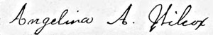

Angelina A. Henderson was the youngest daughter of Captain Joseph Henderson. She married Frederick W. Wilcox, had no children of her own, and died at the age of 40 from tuberculosis.
|
|
Important
Facts |
|
| January 23, 1863 | Angelina A. Henderson was born in Brooklyn, New York. The daughter of Captain Joseph Henderson and Angelina Annetta Weaver. Source: 1900 US Census. | |
| July 26, 1870 | The 1870 U.S. Federal lists Joseph Henderson (46), Angelina (38) living at home with their three daughters and three sons: Sarah R. (20), Maurice D. (18), Joseph Jr. (16), Mary Ann (10), Angelina A. (8), and Alexander D. (6). Source: 1870 US Census Brooklyn, Kings County, New York | |
| June 4, 1880 | The U.S. Census lists Joseph (52) and Angelina (48) living at home with their three daughters, Sarah R. (30), Mary A. (20), Angelina A. (18), and three sons, Maurice (28), Joseph (26), and Alexander (15). Source: 1880 U.S. Census. | |
| November 24, 1880 | On Wednesday, November 24, Rev. Richard E. Field, married Angie A. Henderson and Frederick W. Wilcox at the residence of the bride's parents, Brooklyn, N.Y. Angie was the youngest daughter of Captain Joseph Henderson. Source: The Brooklyn Daily Eagle, November 26, 1880; Certificate Number 3357 (New York City Brides Record Index Results). |  Angelina's Signature (1890) |
| 1879-80 | Frederick W. Wilcox is listed as "WILCOX Frederick W. manf paperboxes 111 Front N. Y. h 102 Hart." Source: LAIN'S 1879-80 BROOKLYN DIRECTORY | |
| 1888-89 | Frederick W. Wilcox was listed with the address 145 W. Broadway N. Y. and 379 Jefferson. Occupation was boxes. Source: Brooklyn, New York Directories, 1888-1890. | |
| November 09, 1888 | Angelina A. Wilcox asked for a separation from Frederick W. Wilcox. An article appeared in the Daily Eagle newspaper saying that "The suit for a separation brought by Angelina A. Wilcox against Frederick W. Wilcox, was set for trial this morning before Chief Judge Clement in the city court. Source: Brooklyn Daily Eagle, November 9, 1888, pg. 4. | |
| November 20, 1888 | The separation was granted Chief Judge Clement. Source: Brooklyn Daily Eagle, November 20, 1888, pg. 6. | |
| Mar 1, 1889 | Frederick W. Wilcox was arrested and placed in the Hudson County Jail, in Jersey City for not paying $9.00 a week to his wife. Source: March 1, 1889 ProQuest Historical Newspapers The New York Times, pg. 8. | |
October 7, 1890 |
Her father, Joseph Henderson, died at 633 Willoughby Avenue, Brooklyn, New York and was buried in the Green-Wood Cemetery in Brooklyn, New York. Lot 13244, Section 88. | |
Jan 18, 1894 |
Angelina filed a bill in the Circuit Court for a divorce from Frederick W. Wilcox, President of the F. W. Wilcox Paper Box Company of Chicago and New York. She charged her husband with cruelty, and said that on numerous occasions she was beaten and kicked by him. Source: Jan 18, 1894 ProQuest Historical Newspapers The New York Times, pg. 8. | |
June 8, 1900 |
The 1900 U.S. Census listed Angelina Henderson (68), son, Morris J. Henderson (46), daughter, Angelina A Wilcox (38 stenography School), and nephew, Stanley W. Wilcox (17), all living at 633 Willoughby Ave. Source: 1900 Census Place: Brooklyn Ward 21, Kings, New York; Roll: T623 1058; Page: 6B; Enumeration District: 336. | |
June 13, 1900 |
A newspaper article appeared in the Brooklyn Daily Eagle saying "Angelina Wilcox is seeking to recover over $4,000 in accrued alimony and for the custody of their child. Her brother, Alexander D. Henderson, on April 4th demanded from Wilcox all of the alimony to Mrs. Wilcox, but Mr. Wilcox refused payment. Mrs. Wilcox says that since 1888 she has supported herself and her child by typewriting." Source: Brooklyn Daily Eagle, June 13, 1900, pg. 3 | |
June 30, 1900 |
Frederick W. Wilcox paid $4,500 in alimony, from November 1888 to 1900 to stay out of jail. Papers were filed in the County Clerk's office. Source: Brooklyn Daily Eagle, June 30, 1900, pg. 2. | |
September 14, 1901 |
An article appeared in the Daily Eagle about the Young People's League, where Stanley L. Wilcox asked that exchanges with similar church publications be addressed to him at 633 Willoughby Avenue, Brooklyn. Stanley was a member of the Young People's League of the Puritan Church. Source: Brooklyn Daily Eagle, pg. 5. | |
September 26, 1901 |
An advertisement appeared in the Daily Eagle "Select Academy, Shorthand and typewriting. 633 Willoughby av, near Tompkins, $5. Both sexes. Individual and class instruction. Complete preparation. Send for catalogue." Source: Brooklyn Daily Eagle, pg. 19. | |
June 10, 1903 |
At the age of 40, Angelina A. Wilcox died from tuberculosis. Source: Her death certificate number is 10085, which is listed in the Italian Genealogy Group database. |
|
June 13, 1903 |
Angelina was buried at the Green-Wood Cemetery in the family plot, lot #13244 and Section #88 of the same cemetery as her parents. A tombstone was later erected, with the following names carved in the headstone: Captain Joseph Henderson, Angelina A. Henderson, and their daughter Angelina A. Wilcox. Source: Green-Wood Cemetery burial inquiry results for Angelina A. Wilcox. | |
June 14, 1903 |
The New York Times obituary read: "WILCOX - June 10, at 633 Willoughby Avenue, Brooklyn, Mrs. Angelina A. Wilcox, youngest daughter of the late Capt. Joseph Henderson." Source: New York Times, June 14, 1903, ProQuest Historical Newspapers The New York Times, pg. 14. | |
| July 20, 1903 | Probate and Will were entered into the Surrogate’s Court of the County of Kings, New York, by her brother, Alexander D. Henderson, who was the executor. It listed Stanley Leroy Wilcox of 633 Willoughby Ave, Brooklyn as her son and heir to $5,000.00 (subject to a mortgage for $3,000.00). Source: New York, Kings County Estate Files, 1866-1923, index and images, FamilySearch. |

Last update: Tuesday, March 3, 2026